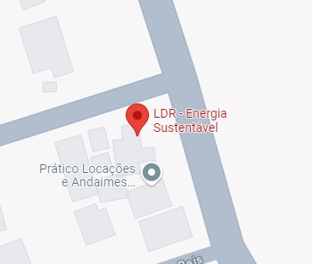

Como ele é fabricado?
O LDR é construído a partir de material semicondutor com elevada resistência elétrica. Quando a luz que incide sobre o semicondutor tem uma frequência suficiente, os fótons que incidem sobre o semicondutor libertam elétrons para a banda condutora que irão melhorar a sua condutividade e assim diminuir a resistência.
Código C++
